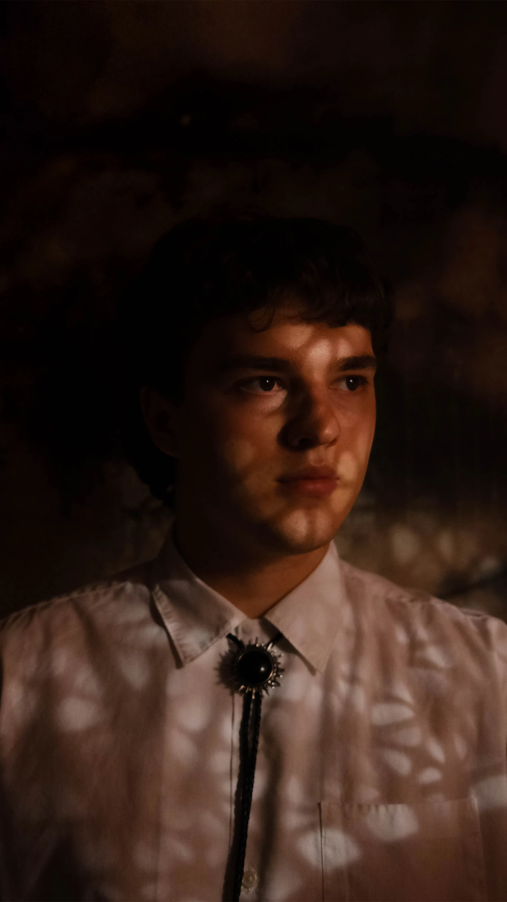

Ba. Design (Digital Media) - RMIT
An aspiring visual artist, based in London, born in Naarm/Melbourne. Drawn to the intersection of visual art, music and immersive design. Experience across motion design, content and live events, I have developed a flexible creative practice shaped by curiosity and a willingness to keep learning. I am personable and motivated by work that brings people together and leaves a meaningful impression.
Hover Jeff to preview. Higher rotation speed follows the cursor faster. Values save in this browser.
Ready — click Jeff.
One S-curve controls the whole animation. The handoff happens at 50% time, where the turn is fastest. Gaze stays live; ambient motion eases to flat. Changes apply on the next replay. The placeholder stays 16:9.